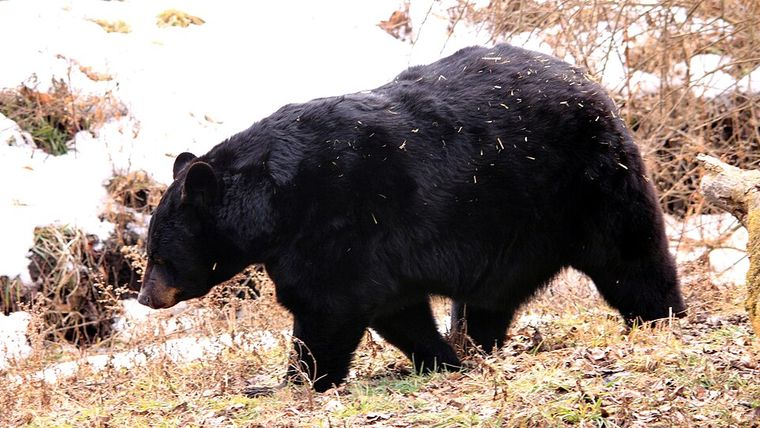

Małopolskie
1 minuta czytania
Służby przekopują działkę pod Warszawą. W tle "gangsterskie porachunki"
Dotyczą porachunków gangsterskich na tle narkotykowym. Śledczy dysponują informacją, że na tym terenie miało zostać zakopane ciało – przekazał reporter tvnwarszawa.pl Artur Węgrzynowicz, który pojechał na miejsce.
Kogo dotyczy: Mieszkańcy MałopolskiObszar: Sprawy lokalne i samorządStatus: Potwierdzone (3 źródła)

Liczba źródeł
3 redakcje
Kategoria
/Polska/Regiony/Malopolskie
Główne źródło
TVN24
Weryfikacja
Potwierdzone (3 źródła)
Dodatkowe szczegóły i kontekst ze źródeł
Funkcjonariusze Centralnego Biura Śledczego Policji prowadzą działania na terenie posesji w miejscowości Kędzierówka niedaleko Piaseczna. Na miejscu pojawiła się koparka, specjalistyczny sprzęt oraz strażacy z grupy chemicznej. Z ustaleń dziennikarzy wynika, że funkcjonariusze Centralnego Biura Śledczego Policji prowadzą czynności pod nadzorem prokuratora. Warszawa w Pigułce
Policjanci przeprowadzili czynności procesowe na działce w Kędzierówce. Gazeta.pl ↗
Kto jak to przedstawia?
3 źródła · kliknij wybraną, by wyróżnić jej ustalenia
TVN24
Relacja wiodąca
Służby przekopują działkę pod Warszawą. W tle "gangsterskie porachunki"
Eksponuje: Wyróżnia własne wątki i pojęcia: Służby.
Pomija: Pomija kontekst (Kędzierówka, czynności, akcja) rozwijany w Warszawa w Pigułce, Gazeta.pl.
Warszawa w Pigułce
Doniesienie regionalne
Tajemnicza akcja służb pod Warszawą. Przekopują działkę w poszukiwaniu ciała. W tle gangsterskie porachunki
Eksponuje: Wyróżnia własne wątki i pojęcia: Tajemnicza, poszukiwaniu, Funkcjonariusze.
Pomija: Pomija kontekst (przeprowadzili, procesowe, Policja) rozwijany w Gazeta.pl.
Gazeta.pl
Doniesienie regionalne
Akcja służb pod Warszawą. TVN24: Policja szukała ciała
Eksponuje: Wyróżnia własne wątki i pojęcia: TVN24, Policja, szukała.
Pomija: Pomija kontekst (przekopują, działkę, Funkcjonariusze) rozwijany w TVN24, Warszawa w Pigułce.
Co wiadomo w sprawie: Służby przekopują działkę pod Warszawą. W tle "gangsterskie porachunki"?
Funkcjonariusze Centralnego Biura Śledczego Policji prowadzą działania na terenie posesji w miejscowości Kędzierówka niedaleko Piaseczna.
Jakie dodatkowe szczegóły przekazują relacje źródłowe?
Na miejscu pojawiła się koparka, specjalistyczny sprzęt oraz strażacy z grupy chemicznej.
Kogo dotyczy i w jakim obszarze wywołuje skutki?
Dotyczy grupy: Mieszkańcy Małopolski (obszar: Sprawy lokalne i samorząd). Status: Potwierdzone (3 źródła).
Zweryfikowane uzupełnienia czytelników (1):
• Dopisano źródło: Gazeta.pl (aktualizacja wieloźródłowa) (link)